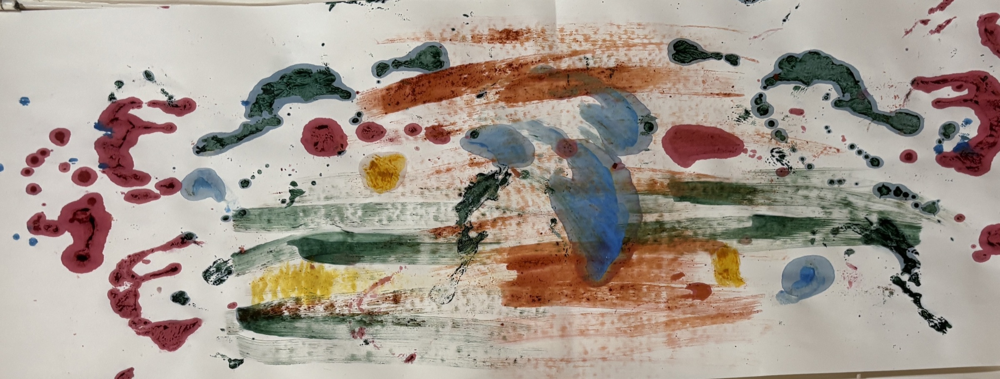

Feeling alive
You wish there was more of what excites you, makes you lose track of time and sparks your curiosity in your everyday life.
I offer online health coaching for women through a holistic and creative approach. This may be for you, if you want to feel you are living a life that matters to you personally and create habits and a rhythm that support your body and mind.Art-integrated coaching brings together conversation and intuitive expression.
A 30-minute first call to talk about what brings you here and whether working together could be helpful.A 30-minute first call to talk about what brings you here and whether working together could be helpful.
Art-integrated coaching brings together conversation and intuitive expression.
You wish there was more of what excites you, makes you lose track of time and sparks your curiosity in your everyday life.

You want to gain clarity on what is meaningful to you, why it matters and how to make more space for it in your life.

You want to look at your priorities from all perspectives. Where do they match with what matters to you, and where would some rethinking and adjustment help?

You wish there was more space and a slower pace in your life. You want to find more balance between movement and stillness.

You want a way of eating, moving and resting that fits into the rhythm of your life and supports your sense of aliveness.

You want to feel closer to yourself, your thoughts, your body, other people and the world around you.
There are many topics in your life. Health, emotions, routines and choices all influence each other. Through conversation and creative expression, we explore what matters to you and how it can influence the way you feel in your body and live your life.
We look at where you spend your energy and which parts of your life you want to make more room for. From there, we explore which of your daily choices fit that picture.
We look at why things are the way they are and what you may not have noticed before.
We conclude by deciding how to bring what you discover into your everyday life.
Some insights are hidden in wordless expression. You don’t need artistic skills. It’s not about what you make, but what you discover in the process.
In a coaching session, creating art through painting, drawing or making collages can help you see what lies beyond your perceptions, beliefs, patterns and goals. It can be a playful, less boxed-in way of giving underlying feelings and unnoticed connections a stage.
During the session, it can help to set an intention for your creation, let it go and let the process take the lead. Below, you’ll find some examples of what can be discovered through art-integrated coaching.

“A relationship with our imagination is a relationship with our deepest self.”
Put everything that seems to scream for your attention on paper, whether it’s your daily responsibilities, new ideas or unfinished tasks. Seeing it expressed in colours and shapes can give you insight into the feelings you associate with it and reveal aspects you may not have noticed.
Use colour, shape or movement to express your energy, tension and feelings that are hard to name. It’s a way to become aware of what your body is carrying that may be difficult to put into words.
Paint, collage, map or sketch what you want more of in your life. What images show up? What can you name? What needs more space in your life?
It is about setting an intention, letting go and seeing what comes up. Looking at what your expression has to say is just another way of listening.
I work online in 60-minute one-to-one sessions. Before we decide whether to work together, we start with a free 30-minute call.
We talk about where you see yourself now. You don’t need to have a topic in mind; we can discover that together.
We look at what you’d like to be different and why it matters to you. You don’t need any art experience. A pen, a piece of paper and curiosity are enough.
We talk about whether working together feels right for both of us. You decide whether you’d like to continue, and I’ll be honest about whether I think I’m the right person to help you.
Throughout the coaching session, Helene asked very good questions, which made me go deeper and deeper into the topic. I felt comfortable, heard and supported. The session motivated me to step into a bigger, better version of myself.
Anja, Spain
What I appreciated most was how naturally the conversation flowed. I barely noticed that Helene was guiding me. It felt like an invitation to pause, check in with myself, and go deeper without overwhelm.
Antonia, Australia

I’m interested in how we combine meaning, intuition and structure in our daily lives. How can we use our time in a way that feels meaningful while nourishing our bodies, our minds and our surroundings? How can we create a life that feels slow yet whole and inspiring?
My background brings together health coaching, yoga, engineering and art. I later trained in Nutrition & Health Coaching at Well College Global and completed a Level 5 Diploma. I’m also a trained yoga teacher, and I studied art for a year at Amsterdam’s Gerrit Rietveld Academie. Creative practice has remained an important part of how I understand and enjoy life.
My reflective art approach is influenced by Pat B. Allen’s work on art as a way of knowing, and I’ve had the opportunity to receive personal feedback from her.
I also facilitate small creative workshops around reflection, letting go and art for insight.
Years of living in different countries, motherhood, and moving between analytical, technical, creative and physical worlds have taught me that there is rarely one perfect way forward.
So, I’m not interested in teaching one rigid or “right” way to live. I’m much more curious about what applies to the individual, and what new perspectives can make redesigning parts of life feel simple and exciting.
Coaching is a collaborative, thought-provoking process. You drive each session and I can help you identify what you want to work towards. I support you with focused attention, reflection, honest feedback, trust in your capabilities, and respect for your right to make your own decisions.
Coaching works best when you bring a real topic, curiosity, and a willingness to look honestly at what is happening. You don’t need to arrive with everything figured out. Your part is to participate openly, notice what feels true or useful, and try small steps or reflections between sessions when they feel supportive.
You remain responsible for your own choices, wellbeing, and pace. I will support you with attention, questions, reflection, honest feedback, and practical ideas where appropriate, but the direction we choose should feel like yours.
Coaching is not therapy and does not diagnose, prevent, cure, or treat mental disorders or medical conditions. It does not replace medical, mental health, legal, or other qualified professional advice. I do not prescribe meal plans, calorie targets, weight-loss protocols, supplements, or treatment diets. When appropriate, I may recommend that you consult another professional. If you are already receiving professional care, you are encouraged to tell that provider about our coaching work.
Our conversations and records are kept private and securely stored. Your information or name will not be shared without your consent. With your permission, your name and contact details may be kept in a coaching log, but no session information will be included.
Yes. You do not need to arrive with a clear goal. We can begin with what feels unclear, heavy, repetitive or slightly off, and gently find what wants attention.